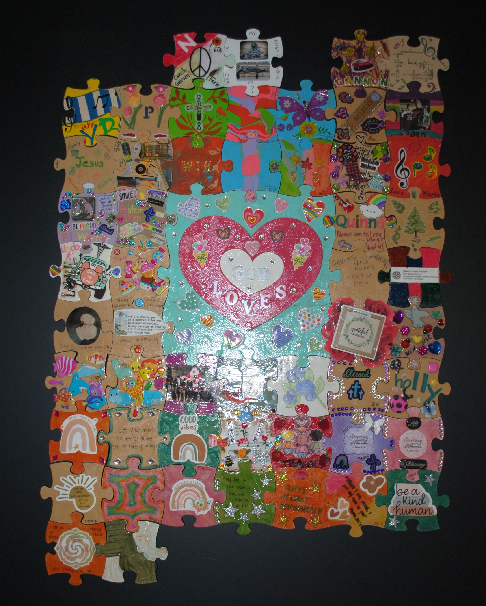
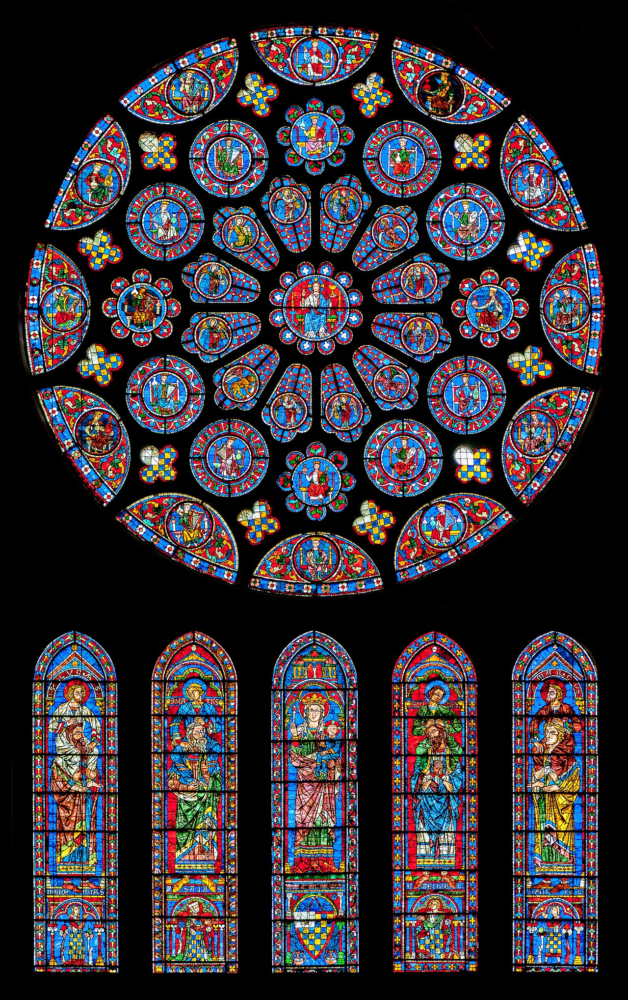

St. James Lutheran Church · Folsom, NJ
✦ ✝ ✦
You Are Beloved
A letter shared from people who follow Jesus · written in his name
Dear friend,
This letter comes from the people of St. James — but the invitation doesn't begin with us. It comes from Jesus of Nazareth, who saw the people religion turned away, sat down among them, and said: come.
The Spirit and the bride say, "Come." And let the one who hears say, "Come." Let the one who is thirsty come; and let the one who wishes take the free gift of the water of life.
Revelation 22:17
Here is what we are inviting you to do:
Whatever you are carrying — a prayer, a longing, a grief, a praise — bring it. Come and sit with Jesus. That is all he is asking.
Bring all your worries and concerns to God in prayer. And the peace of God, which surpasses all understanding, will keep your hearts and minds in Christ Jesus.
Philippians 4:6–7
If the Church has wounded you, we are sorry. If you were told there is no room for you — that was not the Jesus who sought out the ones religion had left behind. We confess that openly. And here is what we know: the Church is incomplete without you. Your presence, your voice, your prayers — these things the Body of Christ has been missing.

Christ and the Woman at the Well · Carl Heinrich Bloch, 1865–79
You do not need to have faith figured out to come. You do not need to be whole or healed or certain. Bring what you have. Bring your questions. Bring your doubt. Bring what is true for you. Jesus says it is enough.

Chartres Cathedral · Each voice part of the whole
For I was hungry and you gave me something to eat, I was thirsty and you gave me something to drink, I was a stranger and you invited me in.
Matthew 25:35
Come and sit with God. Come and meet a community that believes God still listens. Come and sit with Jesus, and with us, and know that you are beloved.
Behold, I stand at the door and knock. If anyone hears my voice and opens the door, I will come in and eat with that person, and they with me.
Revelation 3:20
With open hands and an open table,
The People of St. James Lutheran Church
Celebrating 178+ years of ministry
A Reconciling in Christ congregation — where all means all, and the table belongs to him.
Sunday worship at 10 AM · Wednesday Devotions at 7 PM · Also available via Zoom
1341 Mays Landing Road, Folsom, NJ 08037
(609) 561-4488 · stjamesfolsom.org · Pastor Werner · (609) 335-3083